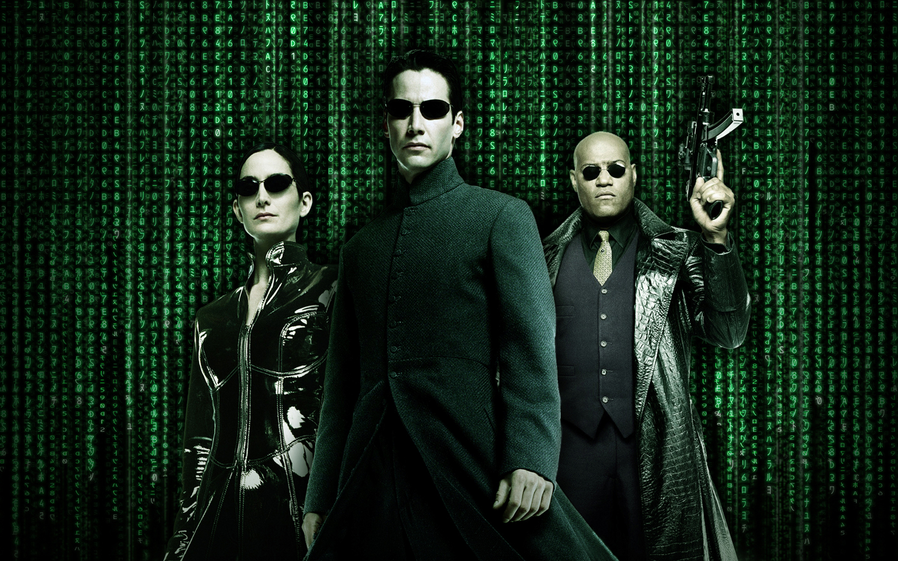
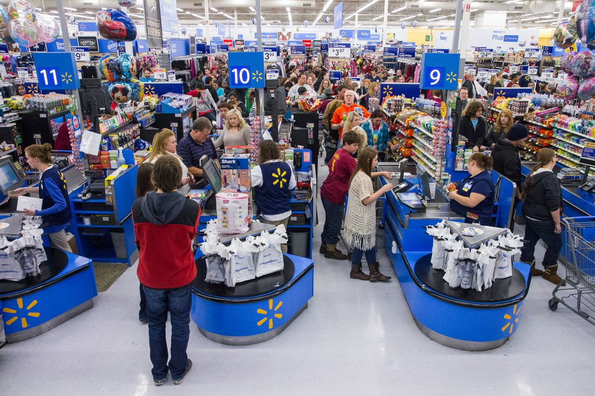

To keep track of all the different people one person can support.
I also just remembered how I want to make a page dedicated to the people i meet.
I'll have a page that documents the people I meet on a daily basis.
A birthday tab?
How about a life checklist / reminder.
March 9th, 2018
Just like diet, things you stand for outside of diet should be treated just the same.
If you stand for something, just stand for it. Why do you have to obsess over it?
I'm talking about the political world. It's toxic to talk about.
I have my beliefs on what makes America a good place. And I will just keep those to myself and practice them myself.
I don't want to bother anyone with what I believe. Just be in this world, now.
It always comes back to the now.
I don't want to use Google music
I don't want to spend 100 bucks a year to listen to 20 songs.
How do you not support google when Google is the internet?
At least Google is not a Chinese company like Apple.
Is iTunes apple?
I think wearing the Hats and shirts is ok as long as I wear them when you actually need to block sun.
I think wearing the hat is similar to wearing the benefits of health.
Carrying a weapon is saying "yeah I believe in our rights" And you don't even have to say anything.
I want to look more into downloading music for mp3's and make cd's more often then use Google, amazon or spotify for music
I want to use music more systematically.
I support Gab and Infowars. But i don't boust about it. I just do it.
I just feel confused
I feel like a true american citizen gets involved by voting for what's right.
And I know the struggle of raising your voice against the system. That's why I want to support people who do. While at the same time just being as real as I can
I haven't had the experience to talk about things like this.
Stick to speaking from your heart. From your own experiences, not experiences of others on the internet. I get that.
Like, I'm just a guy, like many other guys. But i'm woke. As a woke individual, I know of the corruption, I found the people to support and I know my limits.
I can still say so much by living raw. But now I can also live raw and be a patriot by making money, supporting people who also stand for whats right and getting involved.
Once I get into a habit of posting Youtube clips, I will have to begin to merge more towards D.tube and bitchute and also start supporting them as well as gab and infowars.
There's so many people to support! It's great.
All I can do is eat strong foods, practice what I think is right (Being a strong, smart and kind human being) and support those who are pro-americano or free market.
yes I have a voice. And it's not very loud but it's damn near effective. It's my actions dude. my actions.
My voice is just leading by example. And that doesn't involve me worrying about what people are doing across the globe.
I am billy Hunter, I don't give a shit about people. I do me. I do what's best for my body. I observe things for what they are and question them. I know the power of the forests and earth. I am a rounded individual who believes in truth, righteousness and freedom. And I don't even have to say a word. I'm a quite person.
I am an observer of life.
But I am also a hard worker. Working hard clears my mind.
I have goals, just like anyone else.
If you want the world to be more hard working then you yourself needs to be hard working and set goals and make money and use that money for good.
I want to find someone to support with their music while not using dumb platforms.
is it possible to just buy music from an artist? like comon man
I know Twitch is owned by amazon and I will eventually find an alternative. I think Beam is someting to consider.
March 8th, 2018 - Thursday
Ace does not cut wood. Will have to plan the weekend for this project
But the trump rally is on Saturday.. shit.
Will have to either wait or start on Friday
The Matrix is just being consumed by the media

The distractions.. the emotions that blind you is the matrix
It's crazy watching that movie again and seeing it in different ways
I'm very low on money again. shit.
I want to immerse myself into the disciplined world. The way you feel after listening to one of those tracks.
"Stay loyal to yourself and your vision"
"When you feel pain, push harder, on the other side is growth"
I'm listening to victim music right now.
Success is pleasure. If your days can reflect on "good job billy" you are on the path to success
Floating Desks don't seem to hard.
FearlessMotivation, Team Fearless
Do I really need to have a setup at home?
Got to git this on the server
Rally is not until 4 on saturday. there is time to get a wall mounted corner table done
March 7th, 2018
I got to shut up.
I make things worse when I talk to Family about the world and how it makes me feel.
I just need to be a strong ass brother, Period.
Can not wait to get the corner desk in my room.
My room is literally about to be legit.
I'll have my desktop on a standing desk and a small cozy area to start a library and read there.
This is another day of strict eating and i'm already feeling like eating.
Feeling hungry and wanting to eat feels better than a stuffed colon.. remember
You can just never give up on Family
Can't imagine giving up on my Strong Family
Could have made Anna her sandwich, since Dad was asleep
Feeling pretty tired today. Definitely because the lack of food. Can't wait for lunch.
Home Depot has over 100,000 stores in the United States. Holy Hell. Compared to 5,000 Ace hardware stores.

Walmart, Amazon and Google are big businesses. Avoid these places
This needs images to look more appealing.
I want to get into making videos and editing images again
Gotta bring some oregano to kill the germs in the sink when I clean my food
March 6th, 2018
Retractable Hanging desk above windows in room (I can even use the desk in the closet)
Pulley system for Closet blinds
Make the closet a cozy little space. (Which it is kinda already, just a table in the way.)
38" Blanket bar on the north wall
We were put into an environment built for rats (This is why driving sucks and how it can improve)
Walmart is like an example of Early Day Amazon.
Walmart and other monopolies don't even make money.. 20 trillion in debt people
The dog naturally follows you.
This world found a way to ban dog's natural habits such as walking with a master
The Strong Family needs a strong man.
Every food available to us is tainted, the less I eat, the stronger I become.
Imagine the comeback financially a year of no taxes... Amazon
Looking forward to seeing the kids
Strong Family Web page
Prepping lunch before lunch
The challenge of not using monopolies like Amazon for things.
Find stores that actually make profit to support in EVERYTHING you buy
Have this be one of the pages on my Personal Webpage
Humans are literally becoming zombies. Can't even recognize family members from home videos
Incorporate Jquery to expand the idea block for each day
Have a content web page to display things like Posts around the web and Doterra ID and links plus a blog
March 1st, 2018
Tiffany at Giant Eagle
Have a personal WebPage to document the people and names I meet through out my days
Tiffany seemed to be interested in sharing her interests with me. I would of like to give her my Instagram, twitter or Gab or even Facebook to further the conversation.
 I don't want to spend 100 bucks a year to listen to 20 songs.
I don't want to spend 100 bucks a year to listen to 20 songs.
 I support Gab and Infowars. But i don't boust about it. I just do it.
I support Gab and Infowars. But i don't boust about it. I just do it.

 I have goals, just like anyone else.
I have goals, just like anyone else.